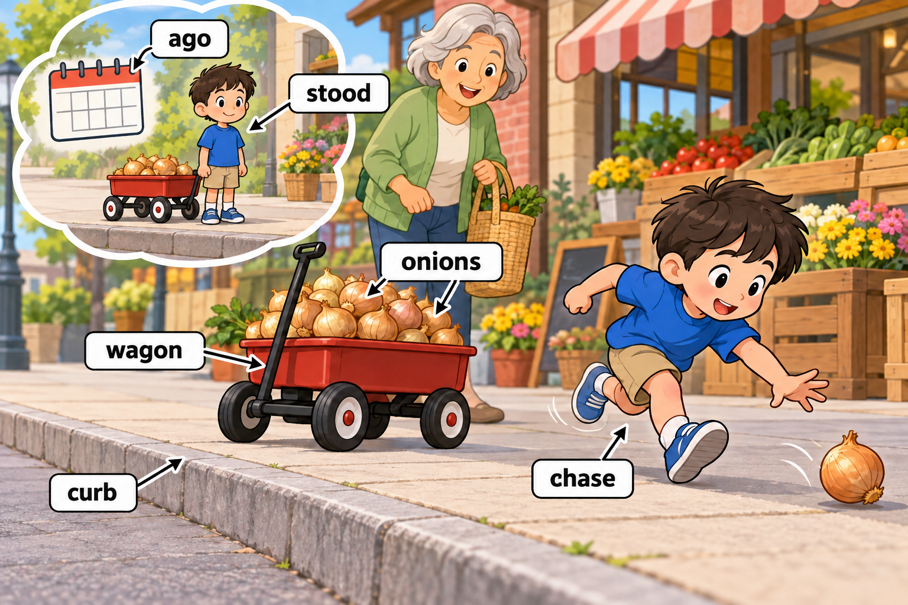
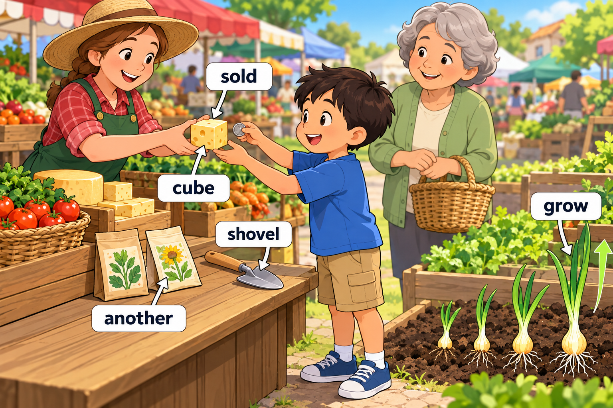
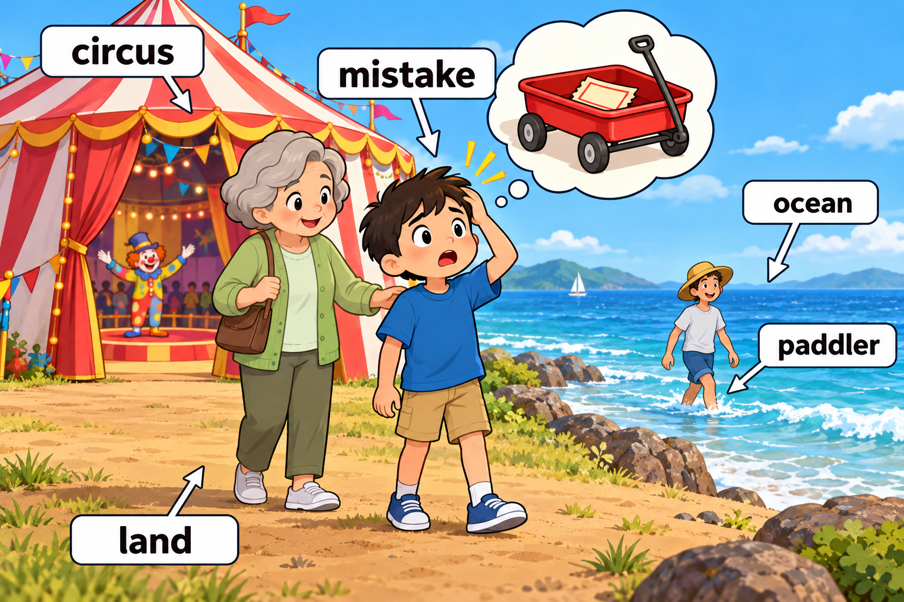
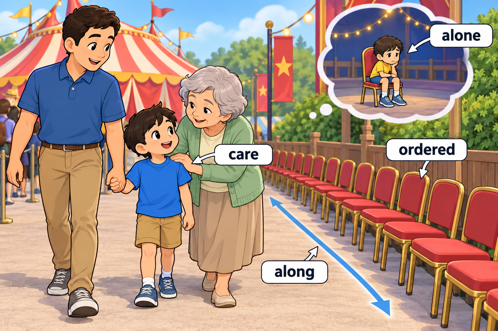

STORY-004 · 第 4 周（推定） · Day 21–27 · 28 个目标词
集市和海边马戏团
The Market and the Seaside Circus
每次练习约 5–8 个词，先读英文，再查看中文解释，最后遮住图片复述。点击图片可查看原图。
Scene 1 — An onion on the run
Day 21、Day 22

A week ago, Miller stood on the curb beside his toy wagon.
It was full of onions for the market.
A loose onion rolled away, so Miller had to chase it.
ago, stood, curb, wagon, onions, chase.
查看中文解释
一周以前，Miller 站在马路牙子上，旁边是装着洋葱的玩具四轮车。一只洋葱滚走了，他赶紧追了过去。
Scene 2 — Seeds and a snack
Day 22、Day 23

At the market, a farmer sold Miller some cheese shaped like a cube.
She gave him a shovel and another packet of seeds.
“Let us grow some onions,” she said.
sold, cube, shovel, another, grow.
查看中文解释
在集市上，一位农场主卖给 Miller 一块立方体形状的奶酪，又给了他一把铲子和另一包种子。她说：“我们种些洋葱吧。”
Scene 3 — A circus by the ocean
Day 21、Day 24

They went to a circus on a piece of land beside the ocean.
A paddler splashed through the shallow water.
Miller made a mistake and left his ticket in the wagon.
circus, land, ocean, paddler, mistake.
查看中文解释
他们来到海边一块土地上的马戏团。一位涉水者在浅水中踩出了水花。Miller 发现自己犯了个错误：把票留在四轮车里了。
Scene 4 — Waiting with Dad
Day 25

An ordered row of chairs stood along the path.
“Do not wait here alone,” Grandma said.
“I care about you, so stay with Dad.”
ordered, along, alone, care.
查看中文解释
小路旁的椅子排得整整齐齐。奶奶去取票前说：“不要独自在这里等。我关心你，所以和爸爸待在一起。”
Scene 5 — A heavy trunk
Day 26、Day 27

Miller saw a new type of van with a heavy trunk in the back.
“Let us weigh it once more,” Dad said, while Miller read the scale on the dial.
They hoped to reach home before dinner.
type, van, heavy, trunk, weigh, once, scale, reach.
查看中文解释
Miller 看见一种新的客货车，车后放着一个沉重的行李箱。爸爸说：“我们再称一次吧。”Miller 看着秤的表盘上的刻度。他们希望晚饭前到家。
复述练习
- What rolled out of the wagon?（用 onion 回答，并做 chase 的动作。）
- What does a paddler do here?（说出或演示在浅水里走。）
- Why did Dad want to weigh the trunk?（用 heavy 回答，再指出 scale。）
选两个目标词造新句。首次练习后第 1、3、7、14 天复习。
开始 Memory Exam → · 可切换到全部故事，或按 Day 练习。
家长词义备注
- paddler：这里采用已核对的英式“涉水者”，画浅水中步行的人。
- grow：按词表暂读词形写作 grow，照片原拼写仍待确认；不以本故事反向证明手写词形。
- ordered：这里是形容词“整齐有序的”，没有改成动词“点餐／命令”。更口语的备用句：The chairs stood in a neat row along the path. 学习 ordered 时保留正文句。
- care about you：关心你；along the path：沿着小路。
- trunk：采用词表的“行李箱”，画可搬动的大箱子；没有改成树干或车的后备箱。
- Day 27 的 scale：这里是秤的表盘上的“刻度”，与 Day 10 的 scales 分开。
- ago、once、reach：分别放在 a week ago、once more、reach home 中记忆。
← 返回单词本总览